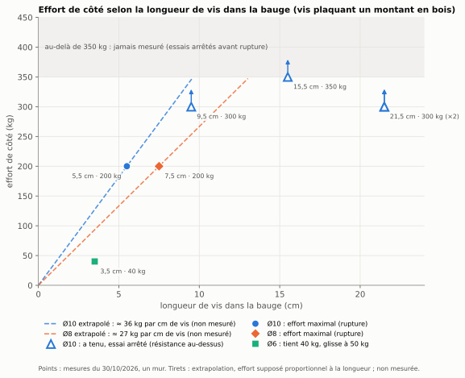

Vis dans la bauge


Peut-on visser dans la bauge ? Les guides de la construction en terre crue disent oui, mais sans détail : ni diamètre, ni longueur, ni charge. Nous avons fait des essais sur un mur pour donner ces repères.
Ce qu’on a trouvé
- Les vis : des vis de charpente à filetage total, de qualité, en diamètre 8 et 10 mm, posées avec un pré-trou de 5 à 6 mm.
- De côté (en cisaillement), on atteint facilement 300
kg. Ce qui compte surtout, c’est la longueur de vis dans la
bauge :
- 200 kg dès 5,5 cm en Ø10, et dès 7,5 cm en Ø8 ;
- au moins 300 kg dès 9,5 cm en Ø10 ;
- une petite vis Ø6 sur 3,5 cm tient déjà 40 kg.
- Ces chiffres valent pour une vis qui fixe un montant en bois contre le mur. Le montant rend l’ensemble plus rigide qu’une vis seule.
Le montage
Une planche de bois, comme un montant, est vissée contre le mur par une seule vis. On la tire vers le bas, le long du mur, comme une charge suspendue, et on lit l’effort au peson. Huit essais, le 30 octobre 2026, sur le mur en bauge sèche d’un cabanon de jardin d’au moins 50 ans, au Clos Poulain, région de Rennes, avec du matériel courant.
Résistance selon la longueur de vis

Les points sont des mesures. Les tirets prolongent les mesures en supposant que l’effort croît comme la longueur de vis dans la bauge : c’est une extrapolation, pas une mesure. Au-delà de 350 kg, rien n’a été mesuré.
Pour aller plus loin
Le papier donne le détail : la pose et le pré-trou, les conseils, les limites, les relevés et leur interprétation. À venir : les essais d’arrachement (vis tirées hors du mur), en novembre 2026.
Vos retours
Vous avez fait des essais comparables, vous voyez une erreur, vous posez des vis dans la terre crue : dites-le-nous (issues GitHub) ou écrivez à remi.cura+terre@gmail.com.